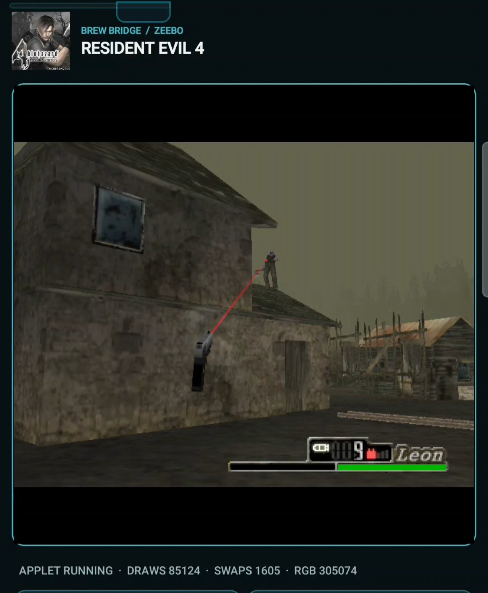
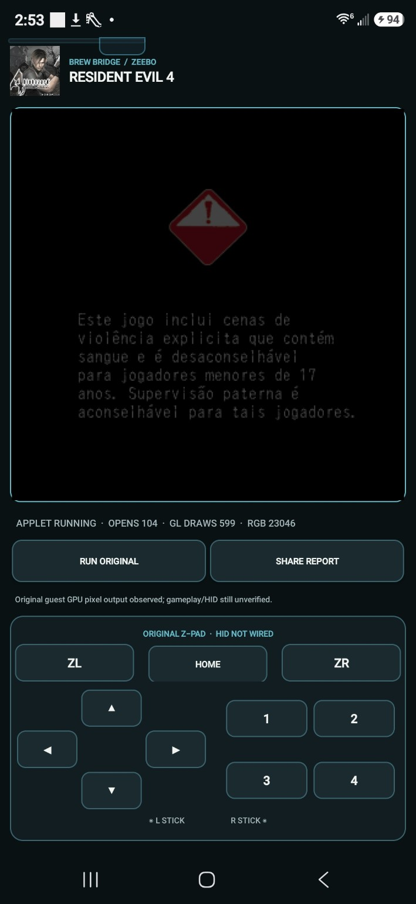

We got Resident Evil 4 running, and Leon didn’t show up. His gun did. His knife did. Everything worked well enough for me to run around as a floating set of weapons, mess about, and get myself killed.
“I was just a gun”
“Aight so what do you think . I worded it like that cause this screen recording I actually did realize I was just a gun got excited giggled and then got killed by an enemy because I was just a gun and forgot what my controls were lmao”Wakka · October 12, 2026 Z02
There was a village to explore and enemies to fight. The HUD still called me Leon, but his body was missing. Apparently being invisible didn’t offer any protection. I had enough of the game back to get into trouble.Z01Z02

The gun is aiming at an enemy on the roof. The character holding it is missing. This is the later village screenshot Wakka preserved.
Open the image for the full original view.
Z12I hadn’t even realized it was the Brazilian Zeebo edition until we got it running. The early phone records already have Portuguese text, although the first message we managed to display was an error rather than a welcome to the village.Z01Z03
First, the game said it could not start
The 0.1.2 report has accepted startup, resource reads, timers and original text drawing. Its Portuguese message says the application cannot be started. EGL initialization has failed, and there are no original 3D frames. The game has reached its own error screen through the bridge.Z03
The next pass establishes a real Android EGL context and the original 640×480 buffer. Swap requests complete. The captured image is still black. By 0.1.4, the report records more than 15,000 forwarded GLES calls, 599 geometry draws and two texture uploads—without a captured nonblack picture.Z04Z05
The capture path had its own mistake. An earlier guest GL error was being read as though it had been caused by the new readback, so a successful capture could be discarded. The repair separated those two error histories and kept the original errors available to the game.Z07
The next phone report kept 23,046 nonblack pixels and four successful captures. We could finally see the original Portuguese advisory. Before we could get to a village with a missing Leon, we had to stop the bridge throwing away pictures it already had.Z06

The original advisory is coming through the GPU path. It is an early rendering milestone, before the later village footage.
Open the image for the full original view.
Z12Getting to the village
Connecting the native digital Z-Pad let the original game receive button presses and releases. That brought the next stops into view: a missing texture-lifecycle call, then a later GLES operation at the Chapter 1 boundary. The reports could now preserve the actual input sequence that reached each fault.Z08Z09
Replaying the 28 retained press/release events reproduced the Chapter 1 failure. The 0.1.9 work added the missing matrix multiplication, indexed geometry and color-array operations, passing the game’s original data into the existing graphics path. Its desktop replay could keep going through hundreds of swaps without that execution fault.Z10
The controls belonged to a Zeebo controller even though this route came through BREW. Buttons 1–4 were face buttons in a two-by-two cluster, with separate ZL, HOME and ZR. Treating those legends as a telephone keypad would have introduced another very plausible wrong answer.Z11
The later phone recordings finally have the village, enemies and working weapons. Leon still has his visibility problem. That’s the version I remember laughing at: Ghost Gun Leon, with enough of the game working to actually play.Z02Z12Z13
The receipts
Selected report lines, investigation notes and recorded feedback behind the story. Each receipt keeps its source and context.
Z01 / The Brazilian edition, ghost weapons and the menu workaroundOwner recollection
Source: Wakka / archive conversation / October 30, 2026
Current owner recollection, retaining wording. The later private video review separately confirms the menu/visibility sequence. This chapter documents the bug and workaround; no game repair was performed.
“i didnt know it was brazillian until we got the fricken game running.” “leon didnt render but the gun and knife did and everything worked so it was the ghost gun” “leon will acutlaly rneder find if you open the menu. i think its hilarous so thats why its not fixed yet.”
Z02 / “I was just a gun”Conversation excerpts
Source: Wakka / RE4 Zeebo conversations / October 12, 2026
Retrieved owner-message excerpts, retaining wording. Both timestamps are converted from UTC to the October 12 Iowa local date. The death is the owner’s account; the sampled retained footage does not independently show a clear game-over.
18:15:49 CDT — “Aight so what do you think . I worded it like that cause this screen recording I actually did realize I was just a gun got excited giggled and then got killed by an enemy because I was just a gun and forgot what my controls were lmao” 23:01:26 CDT — “Nice! Also turns out Leon is there lmao he was just hidden”
Z03 / The first visible message is the original Portuguese startup errorPhone runtime report
Source: RE4_Zeebo_Bridge_v0.1.10_PRIVATE_FULL_CHECKPOINT.zip / Evidence/v012_physical_phone_report.txt · selected lines 5–27
Guest executed instructions: 14150272 Applet created: true Native event delivered: EVT_APP_START code 0 Guest accepted native start: true Guest H2Z file opens: 103 Guest H2Z bytes read: 8562720 Native timer registrations: 5 Native timer pending now: true Native timer callbacks: 4 Original IDisplay.DrawText calls: 9 Original IDisplay.Update calls: 4 Guest EGL initialization failed: true Original Zeebo 3D image frames: 0 (EGL/GLES not implemented) Native Zeebo HID inputs: unimplemented Fault: none --- Latest native IDisplay frame text --- Este aplicativo não pode ser @(0,0) rect=true [0,80,640,40] flags=00008220 iniciado. @(0,0) rect=true [0,120,640,40] flags=00008220 Favor escolher qualquer @(0,0) rect=true [0,160,640,40] flags=00008220 outro aplicativo. @(0,0) rect=true [0,200,640,40] flags=00008220 Pressione qualquer tecla para @(0,0) rect=true [0,280,640,40] flags=00008220 fechar este aplicativo. @(0,0) rect=true [0,320,640,40] flags=00008220
Z04 / A real EGL buffer exists before the scene appearsPhone runtime report
Source: RE4_Zeebo_Bridge_v0.1.10_PRIVATE_FULL_CHECKPOINT.zip / Evidence/v013_physical_phone_report.txt · selected lines 16–22, 26–38
Guest EGL initialization failed: false Android hardware EGL context current: true Original guest EGL swap requests completed: 4 GPU pixels with non-black RGB: 0 Original Zeebo GLES draw calls: not yet translated; no 3D gameplay claimed Native Zeebo HID inputs: unimplemented Fault: none [... selected excerpt ...] --- Android hardware EGL driver --- Android EGL14 hardware path; no synthetic GLES calls eglGetDisplay original DIB=0x10006d0 EGL error=0x3000 eglInitialize version=1.5 ok=true EGL error=0x3000 Original Zeebo EGL attributes=[12324, 5, 12323, 6, 12322, 5, 12325, 16, 12339, 5, 12344] eglChooseConfig count=1 exact=true ok=true EGL error=0x3000 eglCreateContext ES1 share=0 EGL error=0x3000 eglCreatePbufferSurface 640x480 original DIB=0x10006d0 EGL error=0x3000 eglMakeCurrent ok=true EGL error=0x3000 eglSwapBuffers #1 ok=true nonblack=0 EGL error=0x3000 eglSwapBuffers #2 ok=true nonblack=0 EGL error=0x3000 eglSwapBuffers #3 ok=true nonblack=0 EGL error=0x3000 eglSwapBuffers #4 ok=true nonblack=0 EGL error=0x3000
Z05 / 599 draws, two textures, and a readback reporting zero RGBPhone runtime report
Source: RE4_Zeebo_Bridge_v0.1.10_PRIVATE_FULL_CHECKPOINT.zip / Evidence/v014_physical_phone_report.txt · selected lines 16–26, 39–52
Guest EGL initialization failed: false Android hardware EGL context current: true Original guest EGL swap requests completed: 4 GPU pixels with non-black RGB: 0 Original Zeebo GLES interface calls forwarded to Android: 15082 Original Zeebo GLES geometry draw calls: 599 Original Zeebo GLES texture uploads: 2 Maximum non-black RGB GPU pixels: 0 Gameplay/rendering not yet proven Native Zeebo HID inputs: unimplemented Fault: none [... selected excerpt ...] Original glGenTextures n=1 GPU name=1 ORIGINAL texture upload #1 Zeebo format=0x8b95 64x64 compressed bytes=4864 expanded exactly to RGBA8888 ORIGINAL glDrawArrays mode=0x5 first=0 count=4 vertex=0x175a42 vertexType=0x1402 Original glGenTextures n=1 GPU name=2 Original glGenTextures n=1 GPU name=3 ORIGINAL texture upload #2 Zeebo format=0x8c93 512x512 compressed bytes=262144 expanded exactly to RGBA8888 eglSwapBuffers #1 ok=true nonblack=0 EGL error=0x3000 glReadPixels error=0x504 eglSwapBuffers #2 ok=true nonblack=0 EGL error=0x3000 glReadPixels error=0x504 eglSwapBuffers #3 ok=true nonblack=0 EGL error=0x3000 glReadPixels error=0x504 eglSwapBuffers #4 ok=true nonblack=0 EGL error=0x3000 Zeebo GLES actual Android calls=15082 guest geometry submits=599 texture uploads=2 Java errors=0 first draw=mode=0x5 first=0 count=4 vertex=0x175a42 vertexType=0x1402 first/last failure=none
Z06 / The next phone report captures the original GPU picturePhone runtime report
Source: RE4_Zeebo_Bridge_v0.1.10_PRIVATE_FULL_CHECKPOINT.zip / Evidence/v015_physical_original_gpu_render_report.txt · selected lines 16–31, 44–57
Guest EGL initialization failed: false Android hardware EGL context current: true Original guest EGL swap requests completed: 4 GPU pixels with non-black RGB: 23046 Original Zeebo GLES interface calls forwarded to Android: 15082 Original Zeebo GLES geometry draw calls: 599 Original Zeebo GLES texture uploads: 2 Actual GPU readbacks successful: 4 Actual GPU readbacks failed: 0 Prior original GL errors preserved: 3 Last GPU readback error: 0x0 Center pixel ARGB: 0xff000000 Maximum non-black RGB GPU pixels: 23046 Gameplay/rendering not yet proven Native Zeebo HID inputs: unimplemented Fault: none [... selected excerpt ...] Original glGenTextures n=1 GPU name=1 ORIGINAL texture upload #1 Zeebo format=0x8b95 64x64 compressed bytes=4864 expanded exactly to RGBA8888 ORIGINAL glDrawArrays mode=0x5 first=0 count=4 vertex=0x175a42 vertexType=0x1402 Original glGenTextures n=1 GPU name=2 Original glGenTextures n=1 GPU name=3 ORIGINAL texture upload #2 Zeebo format=0x8c93 512x512 compressed bytes=262144 expanded exactly to RGBA8888 Readback #1 SUCCESS realGPU_nonblack=0 alphaNonzero=307200 centerARGB=FF000000 deferredGuestErrors=0 eglSwapBuffers #1 ok=true nonblack=0 captured=1 failed=0 EGL error=0x3000 Pre-readback original GLES error: GL_STACK_UNDERFLOW (0x504) Readback #2 SUCCESS realGPU_nonblack=23046 alphaNonzero=307200 centerARGB=FF000000 deferredGuestErrors=1 eglSwapBuffers #2 ok=true nonblack=23046 captured=2 failed=0 EGL error=0x3000 Pre-readback original GLES error: GL_STACK_UNDERFLOW (0x504) Readback #3 SUCCESS realGPU_nonblack=23046 alphaNonzero=307200 centerARGB=FF000000 deferredGuestErrors=1 eglSwapBuffers #3 ok=true nonblack=23046 captured=3 failed=0 EGL error=0x3000
Z07 / A pending guest GL error was mistaken for a failed readbackEditorial source inspection
Source: RE4 Zeebo v0.1.10 checkpoint / AndroidEglDriver.java
Derived inspection, not a verbatim code excerpt. Reviewed source lines 47–50, 135–158 and 359–363. No implementation code is distributed. The phone reports remain the independent runtime observations.
Inspection of the retained graphics driver finds separate handling for preexisting guest GL errors and errors caused by the readback itself. The previous probe treated a pending earlier error flag as a glReadPixels failure and discarded the capture. The repaired path retains those earlier flags for the original guest glGetError while checking the new capture separately. The 0.1.4 and 0.1.5 phone reports record the before/after transition. Implementation source SHA-256: d5e73f58c8b57a5a3743b4a8cd5ba75c03db39fa50faba14b8a51f6c98fe1209
Z08 / The Z-Pad reaches the game and a texture call becomes the next faultPhone runtime report
Source: RE4_Zeebo_Bridge_v0.1.10_PRIVATE_FULL_CHECKPOINT.zip / Evidence/v016_physical_live_guest_session_report.txt · selected lines 24–33
GPU RGB pixels latest: 0 GPU RGB pixels maximum: 23046 Original Zeebo IHIDDevice active: false Original Z-Pad button press events: 4 Original Z-Pad button release events: 4 Original Z-Pad signal callbacks: 8 Last native button UID: 0x106c406 Analog sticks: not yet implemented Original gameplay/input outcome: not yet verified on phone Guest fault: timer -> RuntimeException: Unsupported BREW interface cls=0103D8DD off=0xC0 r0=011E8E00 r1=00000001 r2=0121C2A4 r3=F0023BC0 lr=0x0012DA08
Z09 / The original Chapter 1 trace reaches another GLES boundaryPhone runtime report
Source: RE4_Zeebo_Bridge_v0.1.10_PRIVATE_FULL_CHECKPOINT.zip / Evidence/v018_S25_ONE_TAP_FAULT_reaches_chapter_1.txt · selected lines 16–33, 3050
Android real EGL context active: true Original guest EGL swaps: 280 Android GLES1 calls: 610640 Original geometry draws: 24321 Original texture uploads: 9 Readbacks passed: 280 Readbacks failed: 0 Original GL errors preserved: 115 GPU RGB pixels latest: 0 GPU RGB pixels maximum: 302638 Original Zeebo IHIDDevice active: false Original Z-Pad button press events: 14 Original Z-Pad button release events: 14 Original Z-Pad signal callbacks: 28 Last native button UID: 0x106c40b Analog sticks: not yet implemented Original gameplay/input outcome: not yet verified on phone Guest fault: timer -> RuntimeException: Unsupported BREW interface cls=0103D8DD off=0x140 r0=011E8E00 r1=01251B1C r2=F0023C40 r3=00000000 lr=0x00169BE8 [... selected excerpt ...] -> BREW vsprintf 01:Sede de Sangue
Z10 / Replay the phone inputs to recover indexed geometryCheckpoint development notes
Source: RE4_Zeebo_Bridge_v0.1.10_PRIVATE_FULL_CHECKPOINT.zip / Evidence/v019_README_FIRST.md · selected lines 5–13
The recorded replay uses an ABI-counting graphics driver on the desktop. It is not a new phone-GPU gameplay verdict.
## v0.1.9 — original indexed 3D geometry Replaying **all 28 original Zeebo HID button press/release events** from the physical S25 v0.1.8 report reproduced the exact GLES `0x0103D8DD + 0x140` fault at the Chapter 1 boundary. Three missing original GLES 1.x operations were then traced and implemented against Android's actual `GLES10` driver: - **`+0x140 glMultMatrixx`**: original 16-element GLfixed matrix copied directly from ARM RAM; no substituted matrix. - **`+0xDC glDrawElements`**: original unsigned-short or unsigned-byte indices read from ARM memory; the largest original referenced index is used to bound and pin the game's vertex and texture-coordinate arrays for the native GPU. - **`+0xA8 glColorPointer`**: original per-vertex RGBA bytes copied from guest RAM and pinned for drawing. Also works with the previously implemented `glDrawArrays` path. Unchanged original-game desktop replay now completes **500 native timer callbacks**, **497 GLES swaps**, **7,740 indexed geometry draws**, **7,740 matrix multiplications**, **215 vertex-color pointer calls**, **27 original texture uploads**, and **169 original file opens**, with **no guest execution fault**. Desktop test uses an ABI-counting graphics driver, not a real phone GPU. The Android version compiles and has a signed EGL14/GLES10 implementation of those calls.
Z11 / Zeebo face buttons are not a phone keypadLater checkpoint summary
Source: RE4_Zeebo_Bridge_v0.1.10_PRIVATE_FULL_CHECKPOINT.zip / README_FIRST.md · selected lines 14–27
- Header: genuine Zeebo launcher image, RESIDENT EVIL 4, ZEEBO / BREW, one-tap SAVE REPORT, three-dot utilities (control help, restart, exit). - Renderer: the existing live FrameCanvas unchanged in content, letterboxed at original 640 x 480 (4:3). Not stretched to an arbitrary portrait rectangle. - Controls: original 4-way Zeebo D-pad UIDs, thumb sliding and owned touch; face buttons 1-4 remain a 2x2 cluster, ZL, HOME and ZR remain distinct. The labels 1-4 are four controller **face** buttons, NOT a telephone numeric keypad, so no inappropriate original-keypad alternate mode was created. - Analog sticks are still NOT implemented; there is no fake analog input and no invented controller mappings. Full gameplay and camera controls remain unverified. Verified Zeebo HID codes originate in BrewRuntime.java. - Kit input ownership safely handles duplicate touches and touch release on pause/exit; Android system Back triggers original guest teardown and returns to the launching Activity / Omni if launched by it. It is not the game HOME.
Z12 / The Portuguese advisory and the floating gunPreserved phone images
Source: RE4 preservation / v015_phone_original_warning_screen.jpg + supplied 1000100707.jpg
Both images inspected as pixels and copied byte-identically. The second image was supplied with its existing framing; this archive made no crop or reconstruction. Private notification text, account identifiers and contact avatars are absent.
0.1.5 original Portuguese advisory: v015_phone_original_warning_screen.jpg Image SHA-256: dfdf85593ec657c0ccb2cf8516429b3f36bdeef22e3eeffdf047b7a632931dad Later village screenshot: 1000100707.jpg Floating handgun and red aiming laser, textured village, rooftop enemy and Leon HUD. No bridge version is assigned to this later image. The supplied framing is retained unchanged. Image SHA-256: ffff0025399ff4ebd0a4cf832a5aa5f279bce66b4b885bd7f2ede76881b4cfcb
Z13 / Ghost gun → Status/Armas → visible Leon, in one recordingSelected video observations
Source: 1000100708.mp4
Full decoded frames were inspected at the recorded presentation timestamps. This is a labeled visual review, not a transcript or a new gameplay run. No version label establishes a build number. The source clip and frame exports remain private; only selected observations are published. Appearance after a menu transition does not establish the underlying renderer cause or a permanent fix.
Selected observations from one original 13.226458-second recording: 1.103222 s / frame 33 — Village scene with floating handgun and no visible Leon body; HUD and original bridge controls present. 3.118011 s / frame 99 — Original Portuguese Status menu open, Armas highlighted; Leon model fully visible in menu panel. 4.065156 s / frame 130 — Returned to village with Leon model fully visible, holding handgun; same recording and bridge UI. 12.038078 s / frame 354 — Leon fully visible and aiming handgun with red laser in original village gameplay. Source video SHA-256: f8e4634b2ffc45243683273c06bc47c7b83697fca929af2a61e5b0a2e796405b
Z14 / The later 0.1.10 shell retains its own phone-test boundaryLater verification summary
Source: RE4_Zeebo_Bridge_v0.1.10_PRIVATE_FULL_CHECKPOINT.zip / README_FIRST.md · selected lines 45–62
## Verification and remaining gaps - The v1.1.1 kit's 35,022 input assertions, 59,221 geometry assertions, configuration checks and min-26 D8 checks pass. See evidence logs. - 52 additional host screen-planner profiles for this original RE4 layout pass. - Original RE4 host replay: 500 timers, 7,740 indexed 3D draws, 27 original textures, 28 native HID events, no guest exception. - Android APK builds and verifies v2/v3 signatures; all 17 original game assets match the v0.1.9 packaged assets exactly; code input/graphics runtime implementations are unchanged. - Source bundle passed an independent clean extraction/rebuild; see Evidence. - NO actual Android phone test of v0.1.10 yet. UI cold Activity startup, landscape/insets/font scales, real touch hit regions, live SAVE REPORT, Android Back, multi-touch, resume, controls in original gameplay, graphics/audio and saves need device verification. - Analog joystick inputs are absent. No gameplay completion or playability is asserted by this checkpoint. See historical v0.1.9 evidence for the furthest original code reached. Existing gameplay and report behavior are preserved as far as host-level tests can establish.